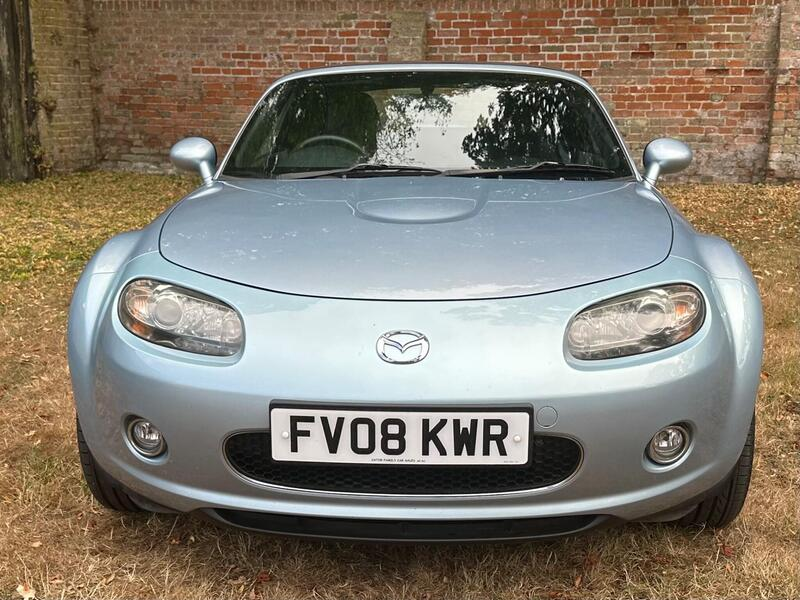
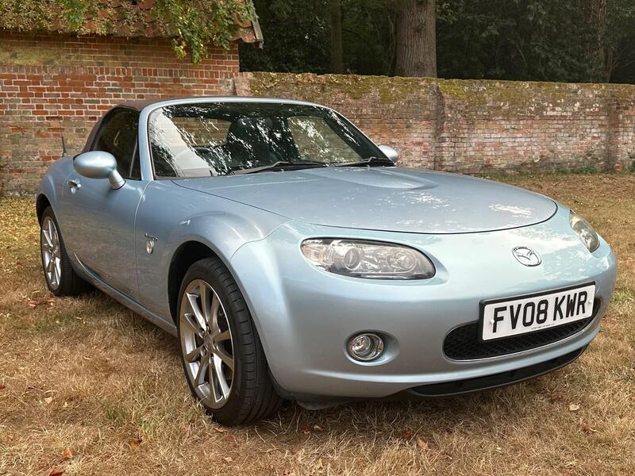
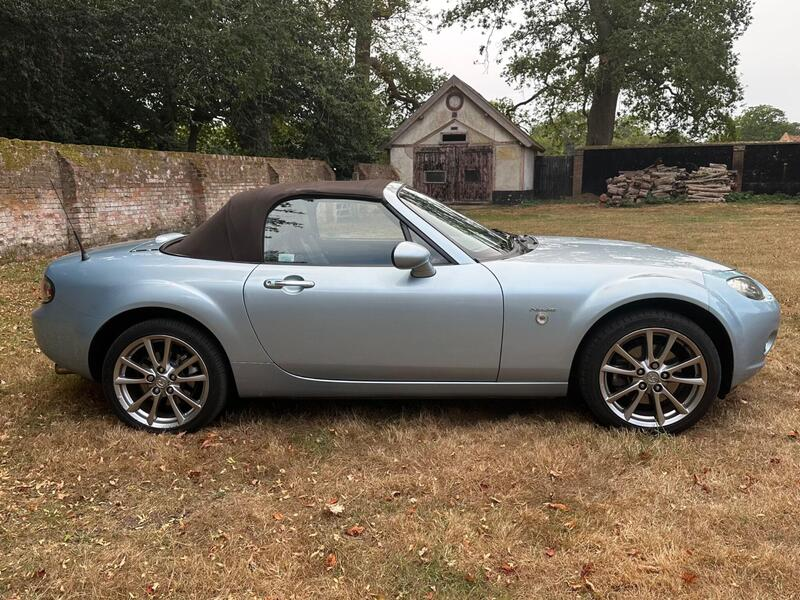

Seller photos from the AutoTrader ad.
Mazda MX-5 1.8i Niseko
A special-edition NC with a long MOT. Worth the drive if it's solid.
Key facts
| Price | £2,995 |
|---|---|
| Year | 2008 |
| Miles | 90,000 |
| Model | Mazda MX-5 1.8i Niseko |
| Colour | Blue |
| Registration | 2008 (08 reg) |
| Owners | 4 owners |
| Service history | Not stated |
| MOT | May 2027 (ad) |
| Seller | Private |
| Location | Wymondham |
| From GU7 | 121 mi (AutoTrader) |
| Checked | 13 Oct 2026 |
Why buy it
- Rare Niseko edition (ad: 240 x 1.8 soft-tops), heated brown leather
- Just serviced, long MOT, 2 keys (ad)
Things to check
121 mi away, the edge of the search
Check the rear arches and subframe
- Mazda MX-5 NC / NB weak spots
Rear subframe, rear arches and sill ends; NB sills and chassis rails. Underseal can hide rot. Engine mostly bulletproof; timing-chain tensioner, seizing calipers, rear diff leaks, cracking coolant tank.
Seller says (extract)
“2008 Mazda MX-51.8i Niseko (soft-top) 90,000 Miles, 5 speed manual. Rare Niseko special edition only 240 of the 1.8 soft-tops built for the UK. Icy Blue Metallic, with the full Niseko spec: dark brown heated leather seats, 17" Niseko alloys, chrome pack, climate control, special-edition badging. Just serviced and a long MOT until May 2027. Comes with 2 key.…”